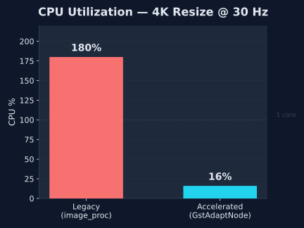
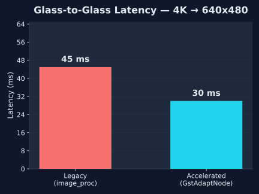

Hardware-agnostic ROS 2 perception acceleration.
A drop-in replacement for
image_proc::ResizeNode.
Auto-detects host accelerators (Intel VA-API / NVIDIA NVMM) at runtime to dynamically construct zero-copy GStreamer pipelines directly from standard ROS parameters. No GStreamer knowledge required.
Same parameters. Same composable node interface. Change one line in your launch file.
ComposableNode(
package='image_proc',
plugin='image_proc::ResizeNode',
name='resize',
parameters=[{
'use_scale': False,
'height': 480,
'width': 640,
}],
)ComposableNode(
package='gst_adapt_node',
plugin='gst_adapt_node::ResizeNode',
name='resize',
parameters=[{
'use_scale': False,
'height': 480,
'width': 640,
}],
)
Probes /dev/nvhost-* for Jetson and
/dev/dri/renderD* for Intel VA-API.
Falls back to CPU if nothing found.
Checks the GStreamer registry for
vaapipostproc or
nvvidconv.
Degrades gracefully with a visible warning if the plugin is missing.
Builds a hardware-specific pipeline at runtime.
Custom appsrc wrapper feeds
I420 frames directly from ROS to the GPU scaler — zero copies.
12.4 MB per 4K frame. Zero serialization between ROS and GStreamer.
Side-by-side: image_proc::ResizeNode (CPU) vs.
gst_adapt_node::ResizeNode (VA-API).
4K source → 640×480 output at 30 Hz.


# Clone into a colcon workspace cd ~/ros2_ws/src git clone --recursive https://github.com/sohams25/GstAdaptNode.git gst_adapt_node # Install dependencies sudo apt install ros-humble-image-proc gstreamer1.0-vaapi \ libgstreamer1.0-dev libgstreamer-plugins-base1.0-dev # Build cd ~/ros2_ws && colcon build --packages-up-to gst_adapt_node source install/setup.bash # Run the A/B stress test ros2 launch gst_adapt_node A_B_comparison.launch.py video_path:=/path/to/4k.mp4 # Open the visual dashboard (second terminal) ros2 run gst_adapt_node visualize_demo.py
nvvidconv (NVMM)
vaapipostproc (VASurface)
videoscale + videoconvert